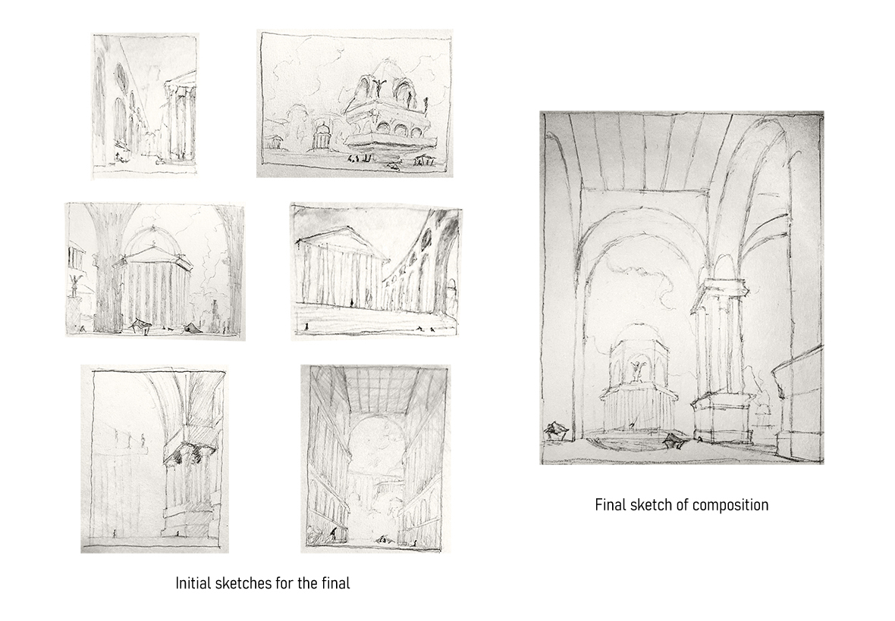
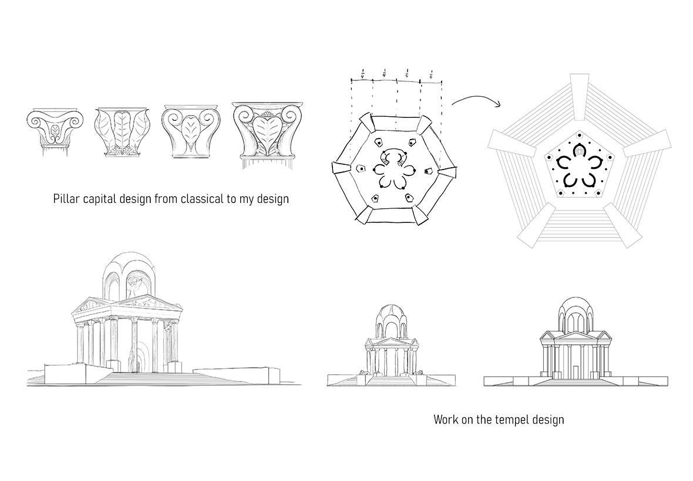
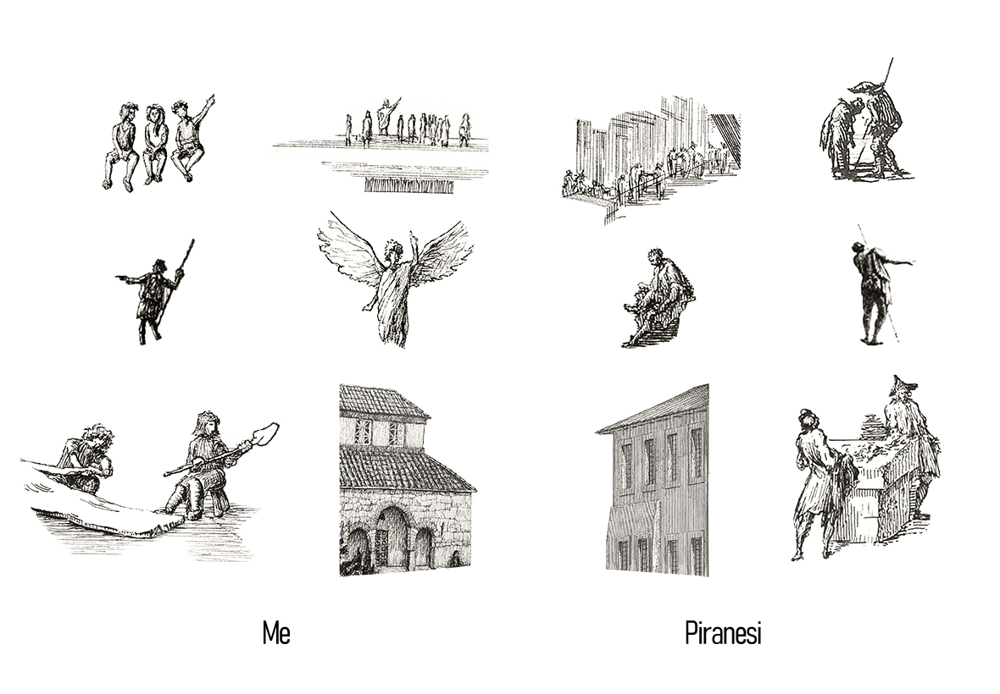
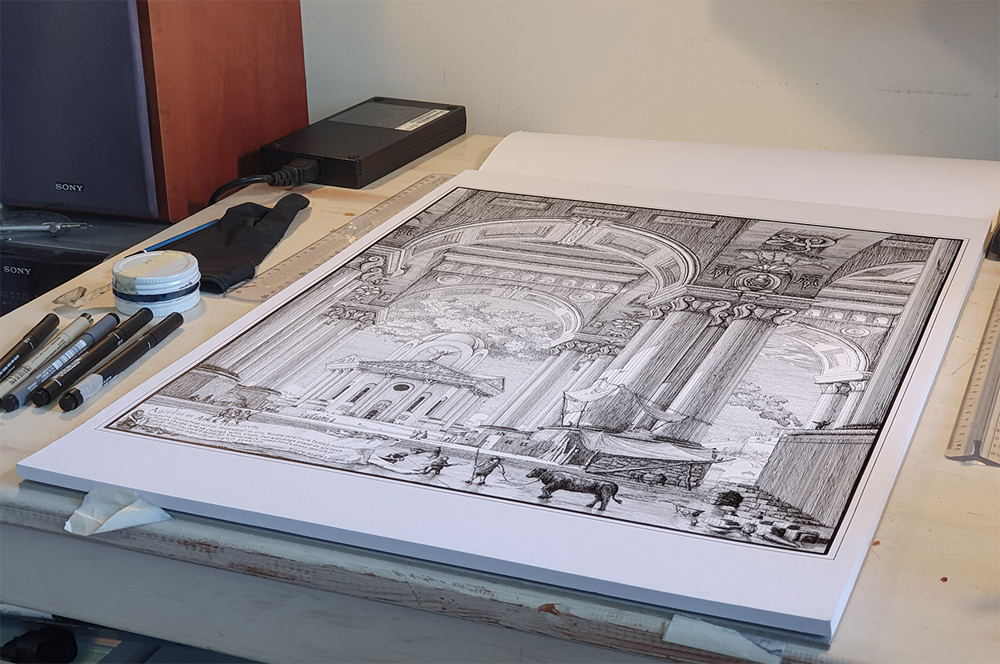

How we adapt
This artwork took me half a year to finish and more hours than any other drawing. I started working on it for a course on Piranesi, just like the drawing called “Via Flaminia” which you can find here. I set out to draw something that was reminiscent of the grandiosity Piranesi often depicts but that has a different undertone, one that isn’t about the architecture at all but about the humans that use the place and the situation they’re in.
Piranesi’s drawings often show classical beauty that exceeds what has actually been build by the Romans, but he has also drawn a lot of the ruins he saw in Rome, desolated, overgrown and in disrepair. My intention was to show Rome just as it started to collapse.
On the sketches here to the right you can see how I played with different subjects and compositions. The bigger and imposing the buildings looked the better. In the end I chose to combine the most interesting parts of three sketches into the final sketch.
Knowing what I wanted from the buildings, I headed into Rhino, a 3D program for architects, and started to play around with the forms to replicate my sketch and get the dimensions perfect. I dropped the buildings into Blender, a 3D program for realistic renders, and started playing around with sunlight and positioning. On the Gif you can see the renders I made to improve my setup. It took maybe a day to get through these iterations but it helped greatly as it lets you move through the space and try out ideas without having to redraw everything constantly. If you want to try this, stick to basic shapes and don’t spend your time getting everything perfect. It’s very easy to get lost trying many options but it’s often better to leave some room for imagination when you start drawing.
The drawing itself shows a scene in Rome how it could have been in 455 AD, after the sack by the Vandals. The Pope had struck a deal with the Vandals, who were Christian, which resulted in a civilized plunder in which the people and buildings where left untouched. Many however lost their possessions and moved out of the city. Rome had been sacked forty years before and was already in decline. The huge public buildings and temples stood empty and slowly became the scene of improvised markets and shelters as people sought saver places to life. Some of Roman houses today are built upon old public buildings, like the theatre of Pompeii. This process began by people using the inside of such buildings, and as ground levels slowly rose they moved up a floor until the original building was fully covered. The beginning of this process might have looked a bit like this. The buildings in the drawing aren’t modelled after real buildings. Instead, they are symbolic representations. The double gallery symbolizes the public buildings and fora created to stimulate social life and trade markets. In the later years of the empire, when less wealth was gained buy conquest, transporting goods over the fast distances of the Mediterranean Sea and selling them in fora and basilica was the preferred way for citizens and cities to earn money and build homes. It was a fairly capitalist society where free trade was stimulated and where the government earned money from through taxation.
The central temple outside of the gallery symbolizes the beauty of roman architecture and the power of the emperor. Emperors where the richest men on earth and often saw themselves as godlike, before Christianity became the official state faith. The winged man under the dome characterizes this godlike persona, but it has double meaning. It also represents Icarus, who flew too close to the sun and fell from the heavens. Many romans knew this story and some might have thought about if after the sack of Rome. St. Jerome lived in the east of the empire as the sack of 410 AD happened and writes about it in his letters:
Yet who will hereafter credit the fact or what histories will seriously discuss it, that Rome has to fight within her own borders not for glory but for bare life; and that she does not even fight but buys the right to exist by giving gold and sacrificing all her substance?
We live as though we are going to die tomorrow; yet we build as though we are going to live always in this world. Our walls shine with gold, our ceilings also and the capitals of our pillars; yet Christ dies before our doors naked and hungry in the persons of His poor.
My voice sticks in my throat; and, as I dictate, sobs choke my utterance. The City which had taken the whole world was itself taken.
- St. Jerome, 409-412 AD




